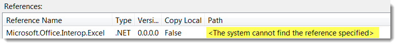
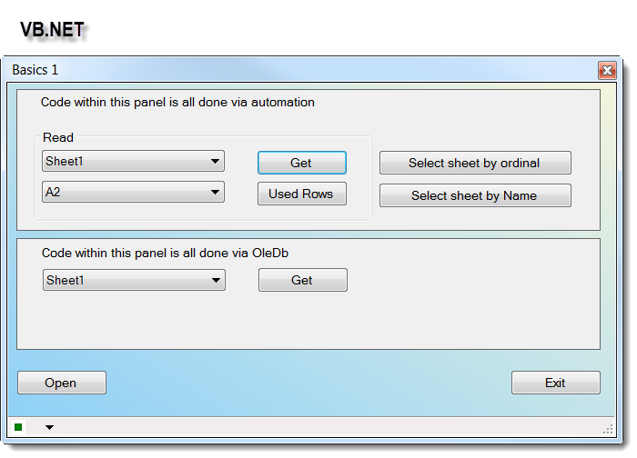

Basics of using Excel automation in VB.NET with emphasis on creating and destroy
Introduction
This sample provides code showing how to properly work with objects to access Excel files, WorkBooks and Worksheets and when finishes properly displose of used objects without the need to call the Garbage Collector.
Building the Sample
Load the project into Visual Studio 2010 or higher, select Build project. If you receive and error that a reference is missing, under project properties, reference tab look for a reference to Microsoft.Office.Interop.Excel.
If there is text indicating the reference is not found do the following. Staying on the reference tab select add new reference, on the .NET tab (not the COM tab) select Microsoft.Office.Interop.Excel. At this point the project will build. Running the
project the first time will create an Excel file in the same folder as your application executable with the file name of MyFile1.xlsx. If you are using an earlier version of Excel prior to Excel 2007 then change the file name to MyFile1.xls. The file name
is in a public module named UtilityRoutines, variable name is ExcelFileName.
This is what you will see if the reference can't be found as per above, you need to remove this reference and add yours in

Note that all code has Option Strict On.
UPDATE 2/18/2014 added a C# solution with several examples, open a file, verify a sheet exist, open a file and collect sheet names and an example of reading cells. I will
continue adding to this C# example as time permits. The main consideration here is that both the VB and C code both dispose of memory exactly the same way.
Screen shot from C first project
Description
The primary focus of this article is to show the very basics of working with Excel automation using early binding without the need to call the GC (Garbage Collector) to cleanup and properly dispose of
objects used to work with Excel automation.
Why would a developer even care about not calling the garbage collector? To answer this questions let us look at a common requirement I see in many forums. A requirement for the project specifies that
data displayed to the user (perhaps in a DataGridView) must be exportable to Microsoft Excel. Many times the developer will search the Internet for how to accomplish this task and finds a solution close to what they need. From here, they will tweak the found
code to suit their requirement to export the data to Excel. The code works great and all seems fine until one day one or more users complain about their machine slowing down. They call their help desk that has the user reboot, which seems to resolve the problem.
However, this keeps happening several times during their workday. The help desk does some research and learns that this only happens when your application is running. You are called into investigate and quickly discover the problem is with the Excel export
module. There are what I call cheap several ways to resolve this and the cheap way is to call the GC which for all intense and purposes is fine. Now all of the sudden during a specific period the application crashes and leaves instances of Excel in memory.
There are two quick solutions, reboot the user’s computer or have them kill the orphan instances of Excel in Task Manager under the process tab. A better way would be to code properly in the first place.
The best way to code starts without even working with Excel. Before coding, keep the following under consideration. Does the file exist, if
not create the file. When opening an Excel file check if a specific sheet exists before selecting it. The attached project shows how to do the above using simple assertion, which can circumvent unnecessary run time exceptions, right off the bat.
When coding for Excel you should have Windows Task Manager open, run the code and when completed Excel should not be showing in the process tab of Task
Manager. When you close the application and Excel instances are removed from Task Manager this is okay if the user only runs this code once. If the user runs the code many times than more instances of Excel are left in memory.
Excerpt from a Microsoft project demonstrating how to correctly cleanup objects dealing with early binding for Excel automation.
Office automation is based on Component Object Model (COM). When you call a COM object of Office from managed code, a Runtime Callable Wrapper (RCW) is
automatically created. The RCW marshals calls between the .NET application and the COM object. The RCW keeps a reference count on the COM object. If all references have not been released on the RCW, the COM object of Office does not quit and may cause the
Office application not to quit after your automation.
A good example of this is when there are two periods used to reference a property or method. So the following line of code “xlWorkSheet.Range("A1").Value”
will cause a reference not to be released. Another example would be to active a worksheet using CType(xlWorkBook.Sheets(1), Excel.Worksheet). To the inexperienced developer neither of these lines of code seem problematic and they do work but will not release
references.
Instead of getting into deep details, I invite you to download the attached project, run it and then study the code. If you follow the examples for opening
and reading data, you will be on the right path to writing much better code to access Excel. To demonstrate this there is a good deal more code to prepare the reading of data from Excel. Out of the entire example, code there is but one line of code, which
calls the GC. This was intentional in that there will be times when keeping to one period in a line of code will elude you so when this happens use the method shown to release this object.
One more item, a class has been included to retrieve sheet names and name range names. This can be done in OleDb but OleDb sorts names a-z meaning if there is a requirement
for natural ordering of sheet names in a control on your form OleDb will not work. The class uses early binding Excel automation yet if you wanted too OpenXML SDK offers the same functionality as my class but only works on Excel 2007 or higher.

Source Code Files
Everything source code wise is in the attached VS2010 project.